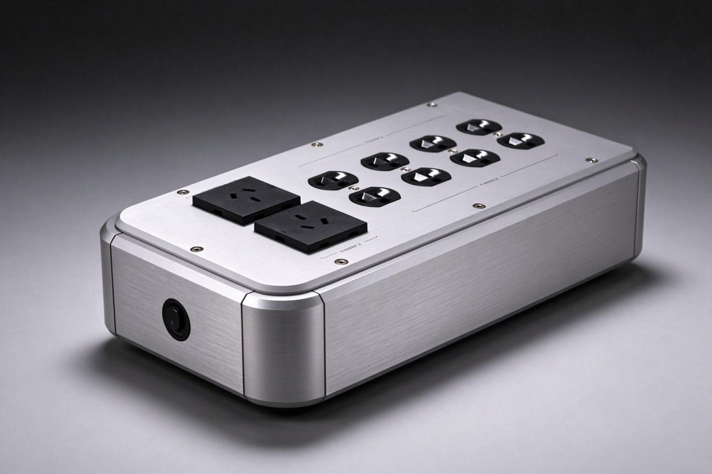

WAVEGUIDE SERIES · 专业供电
特种波导电源
为音响系统提供稳定可靠的供电支持，兼顾高负载输出与专业应用需求。
最大功率：2500 W
产品参数
特种波导电源技术规格
产品名称特种波导电源
最大电流10 A
额定电压250 V~
最大功率2500 W

WAVEGUIDE SERIES · 专业供电
为音响系统提供稳定可靠的供电支持，兼顾高负载输出与专业应用需求。
最大功率：2500 W
特种波导电源技术规格